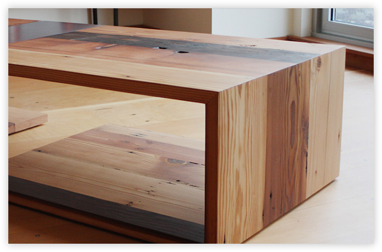
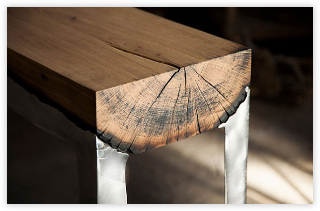

Furniture
Wooder utilizes materials otherwise left behind, rendered useless in their original intent. By creating new pieces made of reclaimed barnwood
Learn more
01.

Decor
We make all types of wooden decor as per design given by Architect Interior designer, contractor which is suitable
Learn more
02.

Wooder - is quality
We create unique design objects made of rare wood, specially under the order. Look at the short video about our work.
Learn more